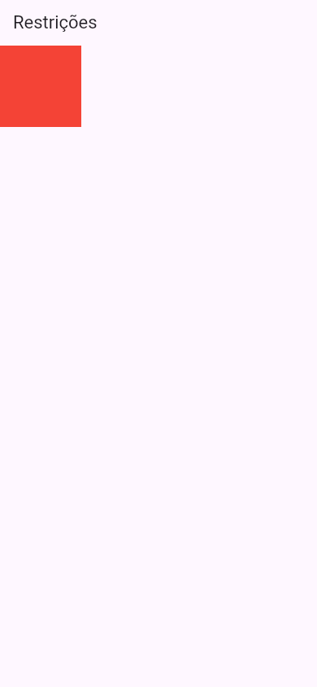
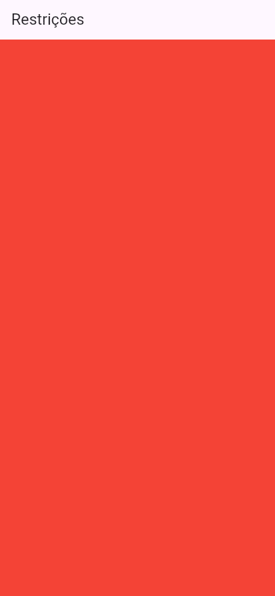
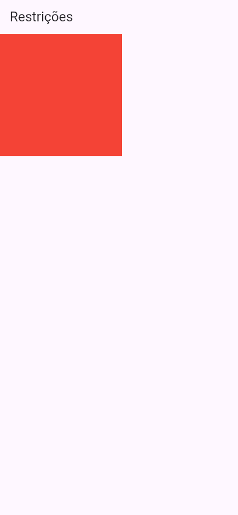
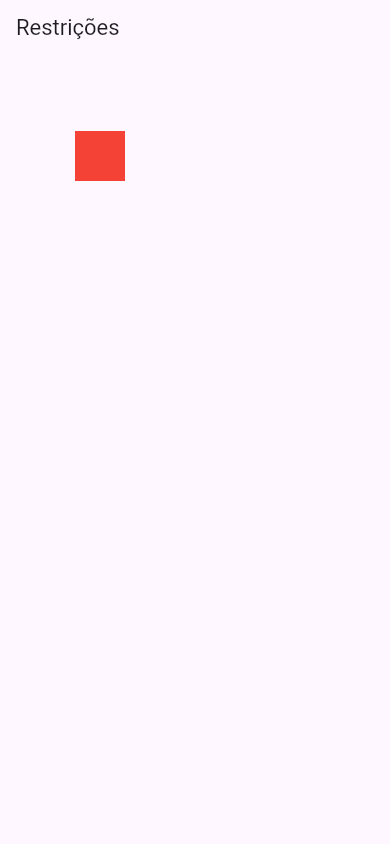
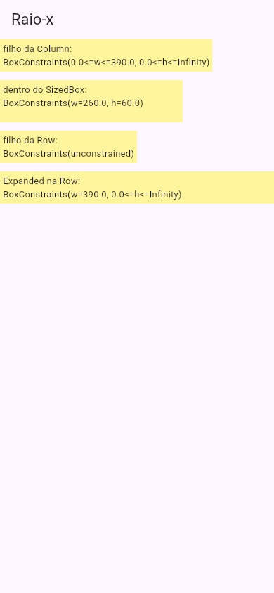

Flutter Como o Flutter Calcula Tamanhos
Nas últimas aulas apareceram alguns mistérios: a Column que ficou da largura do filho mais largo, o Expanded que ignorou o width, o texto que estourou a Row mas quebrou a linha dentro de um Expanded. Todos têm a mesma explicação, e ela cabe numa frase que todo programador Flutter sabe de cor: as restrições descem, os tamanhos sobem, e o pai decide a posição. Em inglês, como está na documentação oficial: "Constraints go down. Sizes go up. Parent sets position." Entendida esta aula, layout no Flutter deixa de ser tentativa e erro.
- A regra das três frases, passo a passo, com exemplos fotografados.
- O que são as restrições (constraints): a largura e a altura mínimas e máximas que um widget pode ter.
- A diferença entre restrições folgadas (loose) e apertadas (tight), e por que o
widthàs vezes é ignorado. - Como ver as restrições na tela com o
LayoutBuilder. - O "infinito" da
Columne daRow, e o erro real que ele causa.
Todos os apps desta aula são um lib/main.dart completo, compilados pelo Flutter Flutter 3.47 do laboratório para a web e fotografados no navegador, em tamanho de celular (390 × 844).
A ideia: a mesada
A Ana dá ao filho dela, o Léo, uma regra para o passeio: "você pode gastar de 0 a 50 reais". Essa regra é a restrição: um mínimo e um máximo. O Léo escolhe o que comprar dentro da regra (digamos, 30 reais) e, quando volta, conta para a mãe: "gastei 30". Só então a Ana decide onde guardar a sacola na mala do carro, porque agora ela sabe o tamanho.
No Flutter é igual, para cada widget da árvore:
- As restrições descem. O pai diz ao filho: "você pode ter de tanto a tanto de largura, e de tanto a tanto de altura".
- Os tamanhos sobem. O filho escolhe o tamanho dele, dentro dessas restrições (ele não pode sair delas), e devolve a resposta ao pai.
- O pai decide a posição. Sabendo o tamanho do filho, o pai o coloca em algum lugar dentro de si. O filho não sabe (nem escolhe) onde está.
Uma restrição no Flutter tem quatro números: largura mínima e máxima, altura mínima e máxima. Ela se escreve BoxConstraints(0.0<=w<=390.0, 0.0<=h<=788.0): "a largura (w, de width) vai de 0 a 390, a altura (h, de height) vai de 0 a 788". Você já viu uma dessas: ela apareceu no console do overflow da aula Row e Column.
1. Um Container de 100 × 100 no body
import 'package:flutter/material.dart';
void main() => runApp(const MeuApp());
class MeuApp extends StatelessWidget {
const MeuApp({super.key});
@override
Widget build(BuildContext context) {
return MaterialApp(
debugShowCheckedModeBanner: false,
home: Scaffold(
appBar: AppBar(title: const Text('Restrições')),
body: Container(width: 100, height: 100, color: Colors.red),
),
);
}
}

O que aconteceu, nas três frases:
- Descem: o
Scaffolddiz aoContainer: "largura de 0 a 390, altura de 0 a 788" (a tela tem 844 de altura; 56 são da barra). É uma restrição folgada: o mínimo é zero, cabe qualquer tamanho até o máximo. - Sobem: o
Containerquer 100 × 100. Está dentro da regra, então ele fica com 100 × 100 e avisa o pai. - Posição: o
Scaffoldpõe obodyno começo da área dele: logo abaixo da barra, à esquerda.
2. O Container sem tamanho
Tire o width e o height:
body: Container(color: Colors.red),

width nem height: o Container ocupa todo o espaço do body.A tela inteira abaixo da barra ficou vermelha. O Container sem tamanho e sem filho tem uma regra própria: "fico do maior tamanho que a restrição deixar". A restrição era de 0 a 390 na largura e de 0 a 788 na altura; ele escolheu 390 × 788. (Com um filho, a regra muda: o Container sem tamanho fica do tamanho do filho, como nos exemplos de Padding e Margem.)
3. Restrição apertada: o width ignorado
Agora o Container de 50 × 50 vai dentro de um SizedBox de 200 × 200:
body: SizedBox(
width: 200,
height: 200,
child: Container(width: 50, height: 50, color: Colors.red),
),

O quadrado vermelho tem 200 × 200, e não os 50 × 50 que o Container pediu. Ninguém reclamou, nenhum erro no console: o width: 50 e o height: 50 simplesmente foram ignorados. Por quê?
- Descem: o
SizedBoxnão dá uma faixa; ele dá uma restrição apertada (tight): mínimo e máximo iguais, "largura exatamente 200, altura exatamente 200". - Sobem: o
Containerqueria 50 × 50, mas o filho não pode sair da regra. O único tamanho permitido é 200 × 200, e é esse que ele fica. - Posição: o
SizedBoxpõe o filho no canto (que, do mesmo tamanho, ocupa ele todo).
Esta é a resposta para o mistério do Expanded, na aula Expanded e Flexible: o Expanded dá ao filho uma restrição apertada ("exatamente a sobra"), e por isso o width: 100 foi ignorado. O width e o height são pedidos, não ordens: valem só se couberem na restrição que veio do pai.
4. Afrouxando a restrição: Center no meio
Como fazer o quadrado ter 50 × 50 dentro da caixa de 200? Ponha alguém no meio que afrouxe a regra. O Center (e o Align) faz exatamente isso: recebe a restrição apertada, ocupa os 200 × 200, mas diz ao filho "pode ter de 0 até 200":
body: SizedBox(
width: 200,
height: 200,
child: Center(
child: Container(width: 50, height: 50, color: Colors.red),
),
),

Center no meio, o Container fica com 50 × 50, centralizado na área de 200 × 200.SizedBox ── "exatamente 200 × 200" ──▶ Center Center ── "de 0 a 200, de 0 a 200" ──▶ Container Container ── "fico com 50 × 50" ──▶ Center Center ── põe o filho no meio dos seus 200 × 200
Agora o vermelho tem os 50 × 50 que pediu, no meio de uma área invisível de 200 × 200 (por isso ele aparece a 75 da borda esquerda: (200 − 50) ÷ 2 = 75). A área do SizedBox continua lá, só que transparente: quem a ocupa é o Center.
Missão: o selo deveria ter 80 × 80, mas está esticado até 300 × 150 por causa do SizedBox. Ponha um Center entre o SizedBox e o Container para afrouxar a restrição.
import 'package:flutter/material.dart';
void main() => runApp(const MeuApp());
class MeuApp extends StatelessWidget {
const MeuApp({super.key});
@override
Widget build(BuildContext context) {
return MaterialApp(
debugShowCheckedModeBanner: false,
home: Scaffold(
appBar: AppBar(title: const Text('Restrições')),
body: SizedBox(
width: 300,
height: 150,
child: Container(width: 80, height: 80, color: Colors.green),
),
),
);
}
}
import 'package:flutter/material.dart';
void main() => runApp(const MeuApp());
class MeuApp extends StatelessWidget {
const MeuApp({super.key});
@override
Widget build(BuildContext context) {
return MaterialApp(
debugShowCheckedModeBanner: false,
home: Scaffold(
appBar: AppBar(title: const Text('Restrições')),
body: SizedBox(
width: 300,
height: 150,
child: Center(
child: Container(width: 80, height: 80, color: Colors.green),
),
),
),
);
}
}
5. O raio-x: vendo as restrições com LayoutBuilder
As restrições são invisíveis, mas dá para mostrá-las na tela. O LayoutBuilder é um widget que recebe a restrição que veio do pai e deixa você montar o filho com ela na mão. Este app faz um widget "raio-x", que escreve a própria restrição num fundo amarelo, e o põe em quatro lugares diferentes:
import 'package:flutter/material.dart';
void main() => runApp(const MeuApp());
class RaioX extends StatelessWidget {
const RaioX(this.lugar, {super.key});
final String lugar;
@override
Widget build(BuildContext context) {
return LayoutBuilder(
builder: (context, constraints) {
return Container(
color: Colors.yellow.shade200,
padding: const EdgeInsets.all(4),
child: Text('$lugar:\n$constraints', style: const TextStyle(fontSize: 13)),
);
},
);
}
}
class MeuApp extends StatelessWidget {
const MeuApp({super.key});
@override
Widget build(BuildContext context) {
return MaterialApp(
debugShowCheckedModeBanner: false,
home: Scaffold(
appBar: AppBar(title: const Text('Raio-x')),
body: const Column(
crossAxisAlignment: CrossAxisAlignment.start,
spacing: 12,
children: [
RaioX('filho da Column'),
SizedBox(width: 260, height: 60, child: RaioX('dentro do SizedBox')),
Row(children: [RaioX('filho da Row')]),
Row(children: [Expanded(child: RaioX('Expanded na Row'))]),
],
),
),
);
}
}
- LayoutBuilder(builder: (context, constraints) { … })
- Chama a função
builderna hora do layout, entregando oconstraints(do tipoBoxConstraints) que o pai mandou. - '$lugar:\n$constraints'
- Escreve o nome do lugar e, na linha de baixo, a restrição como texto (o
toString()doBoxConstraints).

Linha por linha, o que o raio-x mostrou:
| Lugar | Restrição que chegou | Em português |
|---|---|---|
| filho da Column | BoxConstraints(0.0<=w<=390.0, 0.0<=h<=Infinity) | Largura de 0 a 390 (folgada); altura sem limite. A Column empilha e não sabe quantos filhos vêm, então não limita a altura de cada um. |
| dentro do SizedBox | BoxConstraints(w=260.0, h=60.0) | Apertada: exatamente 260 × 60. Por isso o fundo amarelo ficou bem maior que o texto. |
| filho da Row | BoxConstraints(unconstrained) | "Sem restrição" nenhuma: largura e altura de 0 a infinito. A Row não limita a largura dos filhos, e ela própria, dentro da Column, recebeu altura sem limite e passou isso adiante. |
| Expanded na Row | BoxConstraints(w=390.0, 0.0<=h<=Infinity) | Largura apertada em 390 (a sobra inteira da Row), altura ainda sem limite. |
Nos três primeiros, o fundo amarelo tem o tamanho do texto (mais o padding), menos no SizedBox, que obrigou 260 × 60. No último, ele ocupa a largura toda: o Expanded obrigou.
6. Folgada, apertada e infinita
| Tipo | Como é | Exemplo | Quem dá |
|---|---|---|---|
| Apertada (tight) | Mínimo = máximo: um tamanho só | w=200.0, h=200.0 | SizedBox com tamanho, Expanded, SizedBox.expand, o runApp para o primeiro widget (o tamanho da tela) |
| Folgada (loose) | Mínimo 0, máximo um número | 0.0<=w<=390.0 | Center, Align, o body do Scaffold, o Flexible |
| Sem limite (unbounded) | Máximo Infinity | 0.0<=h<=Infinity | A Column na altura e a Row na largura, para os filhos comuns; as listas que rolam, na direção da rolagem |
Agora os mistérios das outras aulas se explicam:
- O texto que estourou a
Row(Row e Column): aRowdá aos filhos comuns largura sem limite. O texto respondeu com a largura da frase inteira, numa linha só; somado ao ícone, deu 172 a mais do que os 390 da tela, e aRowtransbordou. Dentro de umExpanded, o texto recebe uma largura apertada e quebra a linha para caber. - A
Columnda largura do filho mais largo (Alinhamento): aColumnrecebeu dobodyuma largura folgada (de 0 a 390) e escolheu o menor tamanho que cabia os filhos. Dentro de umSizedBox(width: double.infinity), a restrição vira apertada em 390, e a coluna não tem escolha. - O
Centerque não centralizou na altura (Center e Align): dentro de umaColumn, a altura é sem limite. OCenternão pode ocupar "infinito", então fica da altura do filho.
Quando dá errado: o infinito
Column
Uma ListView (aula ListView) quer ocupar toda a altura que puder, para rolar dentro dela. Dentro de uma Column, a altura que ela recebe é infinita:
body: Column(
children: [
const Text('Minhas receitas', style: TextStyle(fontSize: 24)),
ListView(
children: const [Text('Bolo'), Text('Pudim'), Text('Torta')],
),
],
),
══╡ EXCEPTION CAUGHT BY RENDERING LIBRARY ╞═════════════════════════════════════════════════════════ The following assertion was thrown during performResize(): Vertical viewport was given unbounded height. Viewports expand in the scrolling direction to fill their container. In this case, a vertical viewport was given an unlimited amount of vertical space in which to expand. This situation typically happens when a scrollable widget is nested inside another scrollable widget. If this widget is always nested in a scrollable widget there is no need to use a viewport because there will always be enough vertical space for the children. In this case, consider using a Column or Wrap instead. Otherwise, consider using a CustomScrollView to concatenate arbitrary slivers into a single scrollable. The relevant error-causing widget was: ListView ListView:file:///home/ana/app/lib/main.dart:17:13 « (a pilha e os detalhes) constraints: BoxConstraints(0.0<=w<=390.0, 0.0<=h<=Infinity) size: MISSING
- Vertical viewport was given unbounded height.
- "Uma área de rolagem vertical recebeu altura sem limite." Viewport ("janela de visualização") é a peça que mostra um pedaço da lista e rola o resto.
- Viewports expand in the scrolling direction to fill their container.
- "Elas crescem na direção da rolagem até encher o pai." Só que o pai (a
Column) deixou a altura ir até o infinito. - This situation typically happens when a scrollable widget is nested inside another scrollable widget.
- "Isso costuma acontecer com uma coisa que rola dentro de outra." Aqui não é o caso, mas a causa é a mesma: a
Columntambém dá altura sem limite. - ListView … main.dart:17:13
- O culpado, na linha 17.
- constraints: BoxConstraints(0.0<=w<=390.0, 0.0<=h<=Infinity)
- A restrição que chegou à lista: a mesma do "filho da Column" no raio-x da seção 5.
Como consertar: dê à lista uma altura com limite. O jeito mais comum é um Expanded em volta da ListView ("ocupe a sobra da coluna"); outro é um SizedBox(height: 300, child: ListView(…)).
body: const Row(
children: [
SizedBox(width: double.infinity, height: 50, child: ColoredBox(color: Colors.red)),
],
),
══╡ EXCEPTION CAUGHT BY RENDERING LIBRARY ╞═════════════════════════════════════════════════════════ The following assertion was thrown during performLayout(): BoxConstraints forces an infinite width. The offending constraints were: BoxConstraints(w=Infinity, h=50.0) The relevant error-causing widget was: SizedBox SizedBox:file:///home/ana/app/lib/main.dart:16:13 « (os detalhes) constraints: BoxConstraints(0.0<=w<=Infinity, 0.0<=h<=788.0) size: MISSING additionalConstraints: BoxConstraints(w=Infinity, h=50.0) « (…) Another exception was thrown: Assertion failed: file:///home/ana/flutter/packages/flutter/lib/src/rendering/box.dart:2251:12
O double.infinity quer dizer "o máximo que o pai deixar". Num lugar com limite, é um truque útil; mas aqui o pai é uma Row, que deu ao filho 0.0<=w<=Infinity (a linha constraints:). O máximo é infinito, e o SizedBox tentou ter exatamente infinito de largura (additionalConstraints: w=Infinity): "as restrições obrigam uma largura infinita". O mesmo erro aparece com um ListTile dentro de uma Row (aula Card e ListTile). Como consertar: numa Row, para ocupar a sobra, use Expanded, não double.infinity.
Referência rápida
| Regra | Quer dizer |
|---|---|
| As restrições descem | Cada pai diz ao filho os limites: largura e altura mínimas e máximas (BoxConstraints) |
| Os tamanhos sobem | O filho escolhe o tamanho dele dentro dos limites e devolve ao pai |
| O pai decide a posição | O pai coloca o filho; o filho não sabe onde está |
width/height são pedidos | Só valem se couberem na restrição; numa apertada, são ignorados |
Center/Align afrouxam | Transformam "exatamente X" em "de 0 a X" |
LayoutBuilder | Mostra (e deixa usar) a restrição que chegou |
Exercícios
1. Um Container(width: 50, height: 50) dentro de um SizedBox(width: 120, height: 120) fica com que tamanho?
2. Quem decide a posição de um widget na tela?
3. A restrição BoxConstraints(0.0<=w<=390.0, 0.0<=h<=Infinity) é a que chega a…
4. Qual frase está certa?
Missão final: a lista que não aparecia
Missão: este app mostra a tela vermelha de erro (altura infinita). Embrulhe a ListView num Expanded, para ela ocupar só a sobra da coluna.
import 'package:flutter/material.dart';
void main() => runApp(const MeuApp());
class MeuApp extends StatelessWidget {
const MeuApp({super.key});
@override
Widget build(BuildContext context) {
return MaterialApp(
debugShowCheckedModeBanner: false,
home: Scaffold(
appBar: AppBar(title: const Text('Receitas da Ana')),
body: Column(
children: [
const Text('Minhas receitas', style: TextStyle(fontSize: 24)),
ListView(
children: const [
ListTile(title: Text('Bolo de cenoura')),
ListTile(title: Text('Pudim de leite')),
ListTile(title: Text('Torta de limão')),
],
),
],
),
),
);
}
}
import 'package:flutter/material.dart';
void main() => runApp(const MeuApp());
class MeuApp extends StatelessWidget {
const MeuApp({super.key});
@override
Widget build(BuildContext context) {
return MaterialApp(
debugShowCheckedModeBanner: false,
home: Scaffold(
appBar: AppBar(title: const Text('Receitas da Ana')),
body: Column(
children: [
const Text('Minhas receitas', style: TextStyle(fontSize: 24)),
Expanded(
child: ListView(
children: const [
ListTile(title: Text('Bolo de cenoura')),
ListTile(title: Text('Pudim de leite')),
ListTile(title: Text('Torta de limão')),
],
),
),
],
),
),
);
}
}
Resumo
- As restrições descem, os tamanhos sobem, o pai decide a posição.
- Uma restrição (
BoxConstraints) tem largura e altura mínimas e máximas. O filho escolhe o tamanho, mas nunca fora dela. - Restrição apertada (mínimo = máximo) obriga um tamanho: o
widthdo filho é ignorado.CentereAlignafrouxam. - A
Column(na altura) e aRow(na largura) dão aos filhos comuns restrição sem limite: quem quer "ocupar tudo" ali precisa de umExpandedou de um tamanho fixo. - Na dúvida, ponha um
LayoutBuildere mostre oconstraints: é o raio-x do layout.